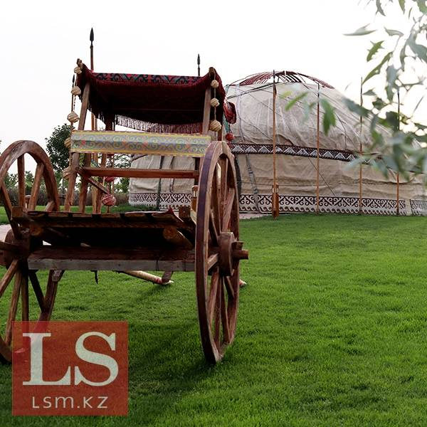
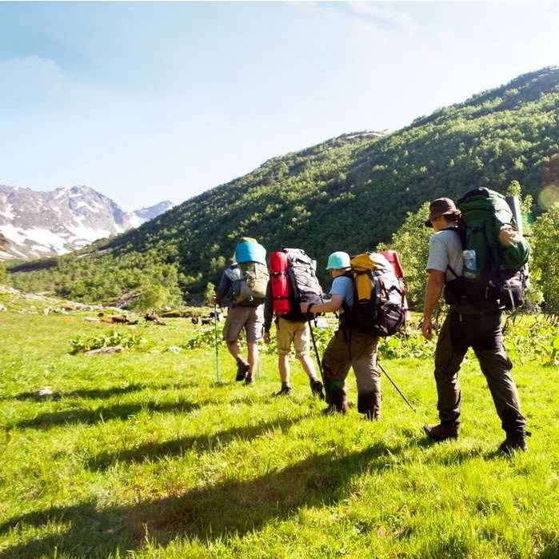
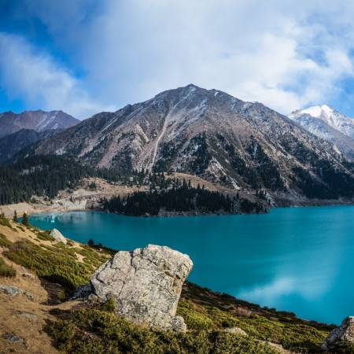

Туристические объекты Казахстана получат триллионы тенге
По информации комитета индустрии туризма, в текущем году был сформирован пул из 202 инвестпроектов с общим объемом частных инвестиций на 2,8 трлн тенге. Их планируется реализовать до 2030 года. В результате будет создано 44,1 тыс. новых койко-мест. По данным Бюро нацстатистики, на данный момент насчитывается 199,3 тыс. койко-мест.

Туристы каких стран чаще всего посещают Казахстан
Как сообщили в минкультуры и спорта, туристы из Ближнего Востока все чаще выбирают Казахстан, передает Ulysmedia.kz. Об этом сообщает ближневосточное бизнес-издание ZAWYA.com вещающее в ОАЭ, Саудовской Аравии, Египте и в других странах Ближнего Востока и Северной Африки.

Казахстанцы стали чаще отдыхать на отечественных курортах
Казахстанский туризм развивается - в прошлом году количество туристов выросло на 30%, а по сравнению с допандемийным периодом – в три раза. Такую статистику корреспонденту BaigeNews.kz озвучили в комитете индустрии туризма министерства культуры и спорта РК.